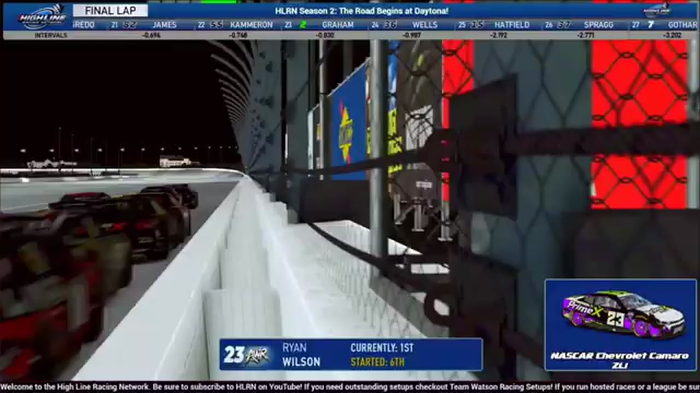

Moreno Restarts the Story at Daytona
Prime X swept the stage points, but Ethan Moreno abandoned Ryan Wilson on the final run and restored Darkhorse to Victory Lane.

Prime X controlled the Season 2 stage argument at Daytona. Ethan Moreno controlled the final choice. With Ryan Wilson leading the closing run, Moreno left his drafting line, committed to the bottom, and reached the stripe first as cars spun behind the leaders. Brandon Showers finished second and Wilson third. Darkhorse therefore opened the new season with the feature win even as its new sister-team rival claimed the earlier checkpoints and the first standings conversation.
The opening green introduced more than a new schedule. Prime X arrived as an organizational challenge to the established Darkhorse order and swept the front stage points according to HLRN’s companion. The exact internal point distribution remains tied to that source, but the competitive message was immediate: Season 2 would not simply replay the hierarchy of the first year.
The primary broadcast stretched beyond three hours because Daytona repeatedly rebuilt itself. An early multi-car crash brought the first yellow. Timothy Tyler later spun into traffic as another caution fell, and Sebastian Michaels carried damage through the following pit cycle. The first third of the race became less about maintaining one draft than surviving long enough to join the next one.
Hunter Wellborn and Brandon Bikey were swept into another big one. Fuel-only stops then split the caution cycle, trading service for track position. A replay later ruled Jason Branch out of responsibility for a three-wide crash, one of the rare places where the broadcast directly narrowed an incident claim. Central preserves that ruling without turning it into a complete fault chart for the surrounding cars.
Tyler Gothard’s wall contact triggered another yellow. A blink involving Ross Campoli preceded the next pileup, and Michaels and Daryl Sabalos appeared in a later caution review. The repeated incidents explain why the final contenders were not simply the drivers who had started with the best pace. Each restart drew a new front group from the cars still able to maintain damage, connection, fuel, and drafting help.
Donny Beach headed another multi-car caution review before Cody Neagles and Evan Perry brought the field back to green. Daytona immediately went three wide again. Wilson eventually launched a four-lap sprint, positioning himself as the driver everyone else would need to displace. Moreno remained close enough to choose when—and whether—to leave him.
Wilson’s lead placed him in the familiar superspeedway dilemma of needing help from the same line that might eventually attack. Staying directly behind him offered Moreno a safer route to a podium but gave Wilson control over the first move. Dropping to the bottom created a chance to win and an equal chance to lose the draft. Showers’s position added urgency because any hesitation between the front two could give a third car the lane and momentum both were trying to protect.
The earlier attrition made that choice sharper. Prime X had already taken the stages, but the feature field had been rebuilt through crashes, fuel-only stops, damage, and connection trouble. Moreno could not win the organizational argument by waiting for another checkpoint; there were no more. Wilson had to defend a four-lap launch after surviving every previous reset, while Showers needed only enough clean air to follow whichever line advanced. The opener’s final contest was therefore individual even though the first half had been framed by teams.
The final-lap decision began with Wilson in front and Moreno behind. When the bottom lane developed, Moreno dropped into it. The move abandoned the safer logic of following the leader and forced the Bear to create his own momentum. Cars spun behind the lead group, but Moreno stayed clear and reached the checkered.
HLRN’s closing readout placed Moreno first, Showers second, and Wilson third. The supported podium explains the full cost of the decisive move: Wilson went from leading the sprint to P3, Showers used the changing lane structure to reach P2, and Moreno converted the bottom into the only position that ended the race.
The result answered the team argument without settling it for the season. Prime X could point to the stage sweep and the early organizational momentum; Darkhorse could point to Moreno’s name at the top of the only finishing order that awarded the feature. Showers’s second and Wilson’s third showed that the final lane choice rearranged more than two cars. Daytona opened Season 2 with both programs holding evidence of strength and neither able to claim that one phase of the race represented the whole hierarchy.
Season 2 began with no single organization owning every phase. Prime X swept the stage story, and HLRN’s companion placed VRX at the top of the early team context. Darkhorse answered through Moreno’s feature. That division is the opener’s real promise. A rival could take the checkpoints and still leave the established team enough space to win—if one driver was willing to abandon the line everyone else expected him to keep.
Receipts behind the report
These links open the exact HLRN source windows used by the editorial file.
- OPENING · CONTEXT
Season 2 opens with a new team challenge
Prime X is introduced as the sister team prepared to take on Darkhorse.
▶ 0:34 SOURCE WINDOW - MIDDLE · STAGE
Prime X sweeps the stage points
An early incident ends the stage and leaves Prime X in the top three scoring positions.
▶ 2:28 SOURCE WINDOW - CLOSING · FINISH
Moreno drops low and leaves Wilson behind
The Bear takes the bottom-lane run as cars spin behind the lead group.
▶ 3:39 SOURCE WINDOW - CLOSING · RESULT
Darkhorse owns the first Season 2 checkered
HLRN confirms Ethan Moreno as the Daytona winner.
▶ 4:11 SOURCE WINDOW
The feature result supports Moreno P1, Brandon Showers P2, and Ryan Wilson P3; the order beyond them remains open. Stage and team standings follow the HLRN companion program.